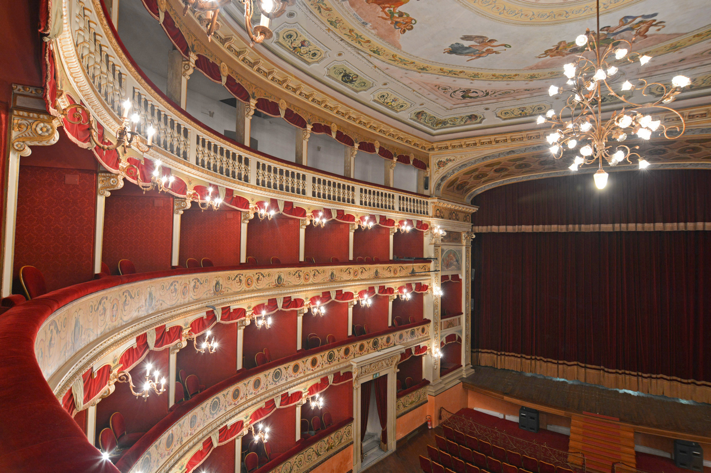
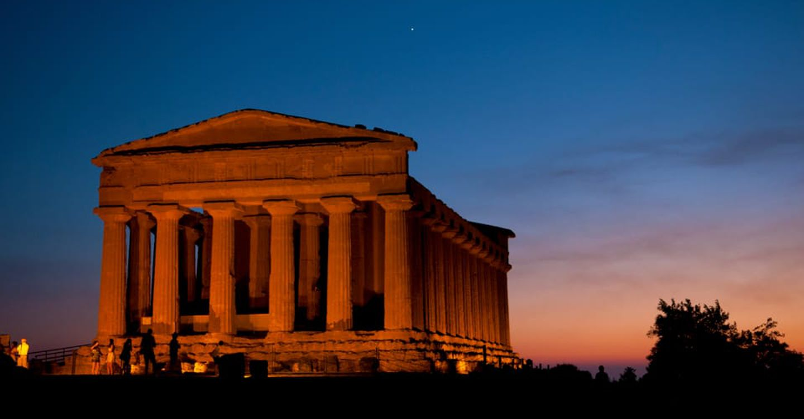

Entra nell'atrio del Comune. È un chiostro silenzioso che ti fa dimenticare il caos di Via Atenea.

Cerca la targa dedicata a Pirandello. Qui il premio Nobel non è un monumento distante, è un vicino di casa.

Mentre tutti corrono alla Valle dei Templi, noi ci rifugiamo qui, nel cuore della città "viva". È una piazza stretta, quasi un cortile, dominata dal Palazzo di Città (un ex convento). È qui che senti il peso della letteratura: sembra quasi di vedere i personaggi di Pirandello uscire dal portone del teatro. Gli agrigentini siedono al bar della piazza per discutere dei "fatti del giorno" con una verve che sembra uscita dritta da Il Fuorigioco.

Entra nell'atrio del Comune. È un chiostro silenzioso che ti fa dimenticare il caos di Via Atenea.

Cerca la targa dedicata a Pirandello. Qui il premio Nobel non è un monumento distante, è un vicino di casa.